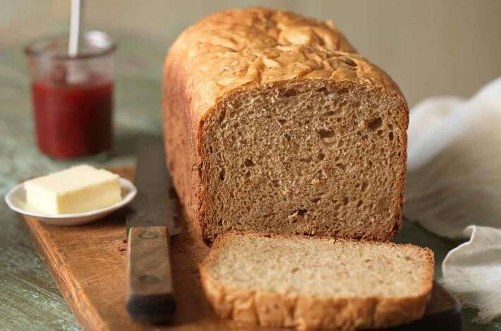

Bread: High Altitude

Description
This is a simple and fairly easy bread recipe adjusted for high altitude.
Ingredients:
- 1 1/4 cups and 2 Tablespoons lukewarm water
- 2 tablespoons olive oil or vegetable oil
- 3 Tablespoons and 3 3/4 teaspoons honey or maple syrup
- 3 1/2 cups Whole Wheat or All Purpose Flour
- 1 1/2 teaspoons plus a dash of salt
- 1 1/4 teaspoons instant yeast
Steps:
- Weight your flour; our measure it by gently spooning it into a cup, then sweeping off
any excess
- Put all of the ingredients into the bread pan. Program for basic white bread (or whole
wheat if your machine has this setting), and press start.
- Remove the bread from the bread machine when it's done. Either turn it out of the pan
onto a rack to cool; or turn it out of the pan, place it back in the machine (atop the
structure that holds the pan), crack the lid open about 1", and let it cool right in the
cooling-down machine. This helps prevent the crust from wrinkling as the loaf cools